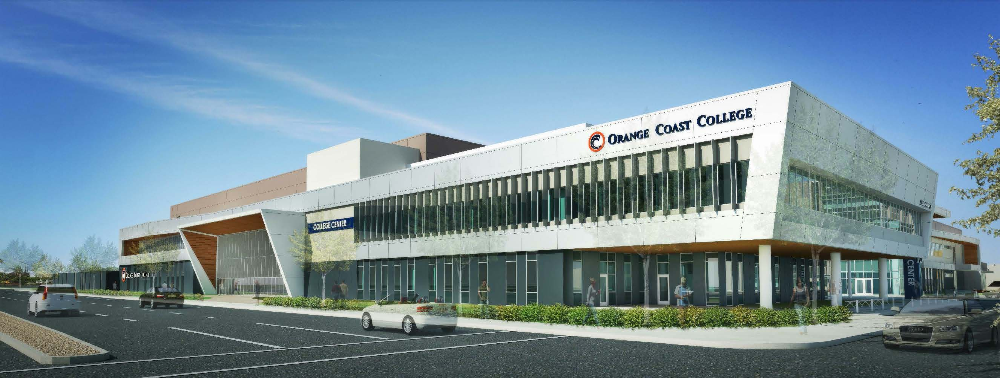
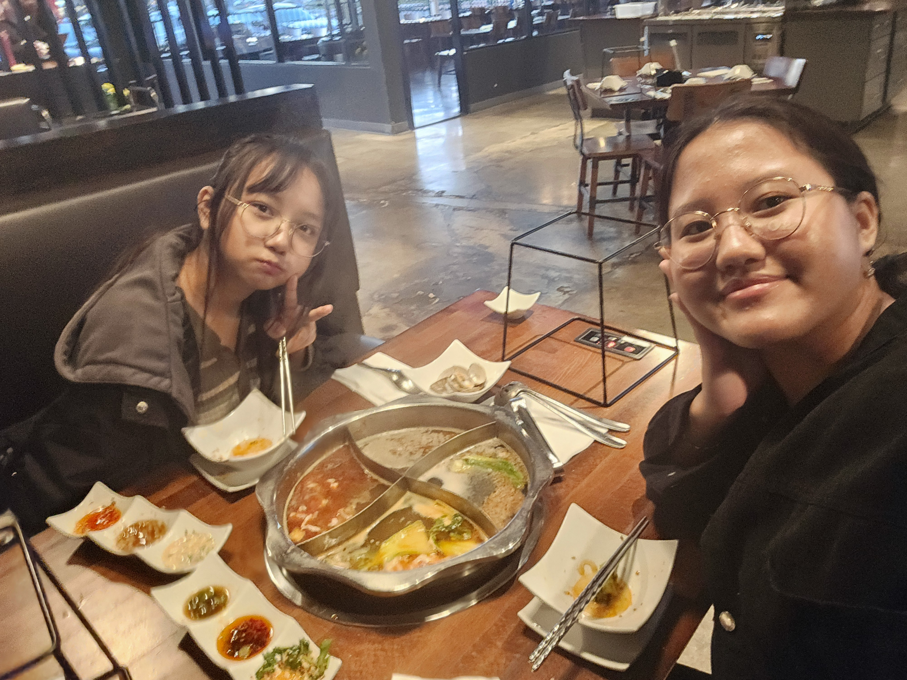
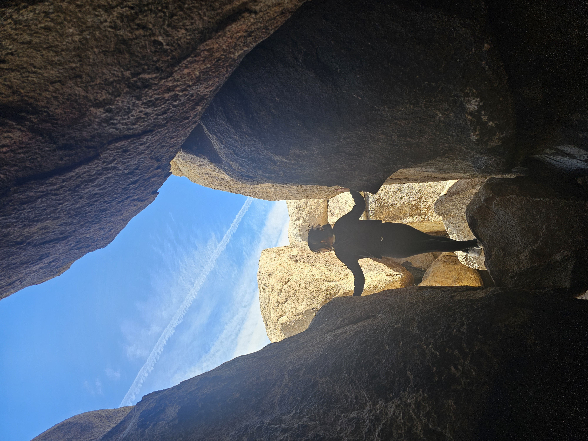

I’m Cherry Kim, a computer science student from Myanmar
and a proud member of the Falam community. I’m currently a
senior at the University of Indianapolis, graduating in May 2026
with a Bachelor’s in Computer Science. My journey into technology
began in high school, when an introductory CS course sparked
my passion for problem-solving and innovation. From there, I began
to wonder just how far technology could go and how I might one day
contribute to it. That curiosity kept pushing me to explore new concepts,
experiment with small projects, and see computer science not just as
a subject,but as a way of thinking about the world.
This portfolio showcases my academic experiences, projects,
and professional growth. Feel free to connect with me through
LinkedIn, GitHub, or Email, and check out my resume for a
complete overview of my path. Thank you for visiting—I look
forward to future opportunities and collaborations.
University of Indianapolis — Teaching Assistant (Aug 2025 – Present)
Created a strong academic support system for students by assisting
with computer science courses, helping break down complex topics
such as algorithms, data structures, and programming principles.
Regularly guided students through lab assignments, provided
constructive feedback, and encouraged problem-solving strategies
that improved their confidence and performance. This role deepened
my own mastery of computer science while sharpening my
communication and mentorship skills.
Created process improvements in a fast-paced manufacturing
environment by conducting time studies, analyzing production workflows,
and updating standard operating times in SAP. Collaborated
with engineers to identify bottlenecks and track material usage across
multiple propeller series. This experience gave me valuable
exposure to professional engineering practices, data analysis, and
cross-team communication within a large-scale industrial setting.
Created a welcoming and efficient environment for customers by
preparing food, processing orders quickly and accurately, and managing
POS transactions during busy shifts. Balanced responsibilities
between customer service and teamwork, resolving inquiries with patience
while supporting colleagues to maintain smooth operations. The
role strengthened my ability to multitask and deliver consistent results
under pressure in a high-volume setting.

Orange Coast College — Student Assistant / Help Desk (Oct 2022 – May 2024)
Created streamlined support for thousands of students by
coordinating services at the campus help desk. Assisted with resolving
technology-related requests, scheduling resources, and adopting
new tools that improved efficiency for both staff and students.
Through this role, I developed strong organizational skills,
practiced professional communication, and gained experience balancing
multiple requests in a busy academic environment.
My Projects
System for Grading Students
Created a program that was developed as part of a team
project exploring the application of data
structures and algorithms in real-world contexts.
Our goal was to simulate a class grading system that
could dynamically handle student data. I implemented
features to securely access private variables and
modify student information, ensuring flexibility
while maintaining encapsulation. This project helped
me appreciate how foundational computer science concepts
can translate directly into practical systems for data
management.
Mini Game
Created a program that demonstrated the use of stacks
and queues to solve practical computational problems.
The program was designed to handle dynamic data operations,
including insertion, deletion, and traversal, while ensuring
efficient memory management. Through this project,
I gained experience applying core data structures to
solve real-world style challenges and built a stronger
understanding of algorithmic efficiency.
Friend Compatibility App
Created a program that matched users with compatible friends
based on survey responses. The system read user data from
external files, applied logic to evaluate compatibility
scores, and displayed results in a clear, user-friendly
format. This project emphasized structured programming,
file handling, and the ability to transform raw input
into meaningful insights for end users.
Internet of Things Data Visualization
Created a program that processed and analyzed IoT datasets
to provide meaningful visual summaries. The application
applied sorting and searching algorithms to handle large
volumes of data efficiently, then presented results in a
way that allowed trends and anomalies to be identified
quickly. This project gave me practical experience in
working with datasets, algorithm optimization, and
presenting technical results in a digestible format.
Air Pollutant Sensor
Created a program plan for an air-pollutant sensor
system that translated background research into an
implementable workflow. Conducted a literature review
of monitoring approaches and sensing modalities,
defined objectives and constraints, and used Six Sigma
(DMAIC) to structure problem definition and process analysis.
Produced conceptual architecture diagrams
(sensing → microcontroller → data pipeline → visualization),
user and system requirements, risk and cost considerations,
and KPI definitions. Delivered process maps and an implementation
roadmap; no hardware or code was produced—the outcome was a
validated concept and plan.
My Hobbies
I really enjoy spending time at the beach. The sound of the waves and the ocean breeze
always help me relax and recharge. It’s one of my favorite places to slow down, reflect,
and appreciate nature.

Food is one of my passions, especially when it comes to trying new dishes from different
cultures. I love exploring new flavors, and I especially enjoy anything that’s spicy.
For me, food is both an adventure and a comfort.

Hiking has always been an activity I enjoy, especially when the weather is cool. It gives
me a chance to stay active while appreciating nature at the same time. I like the sense
of adventure that comes with exploring new trails.
Gaming is another big part of my free time. I like playing strategy and team-based games
like Valorant and TFT because they challenge me to think critically, adapt quickly, and
work with others toward a common goal.
JavaScript Effects
This section demonstrates all the JavaScript functionality in one place.
Dark Mode Toggle
Resume Download
Typewriter Effect
This heading types like a typewriter!
Project Search Filter
Midterm Project - Stacks and Queues
Friend Compatibility App (C++)
Internet of Things Data Visualization
Personal Portfolio Website
Scroll to Top
Scroll down and click the corner button or this demo button: